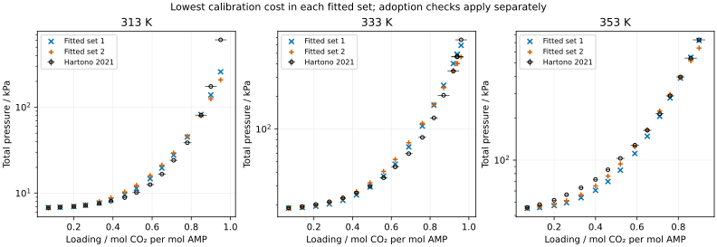

AMP reactive-model redesign
No adopted endpoint within the declared model alternatives; Kundu remains unscored
Result
The redesigned AMP comparison in #243 produced no adopted parameter endpoint. The completed cation-A fits still fail the interior-bound, pressure or carbamate-fraction requirements. Cation B was initialized by the prescribed restricted fits, but its resulting full starts fail the calibration information check. Therefore the 51 Kundu 2003 CO₂ partial pressures remain unscored. The registered outside-fit test, \(E_p\le30\%\), was not reached; it was not failed by a computed Kundu error.
This is a negative assessment of these declared parameter families and starts under frozen MEA shared species, Hamborg protonation and Hsieh dielectric coefficients. It is not evidence that no AMP ePC-SAFT model can work. It supplies calibration comparisons and numerical verification; it establishes no new held-out prediction or absorber-use qualification. It does not test a secondary amine. Issue #259 owns the separate manuscript decision; no manuscript source was edited.
Cation A: completed calibration fits
Both fitted sets use the same 156 calibration values: 47 Hartono 2021 total pressures at 313, 333 and 353 K in 26.8 mass% unloaded AMP, 26 pressures and 26 vapor AMP fractions from Hartono 2013, and 57 Ciftja 2014 carbamate fractions at 298.15–318.15 K in 30 mass% AMP. The NMR quantity is carbamate moles divided by total analytical AMP moles. Source rows, uncertainty interpretation and exclusions remain in source admission.
Set 1 retains the ion-size/cation–CO₂ fitted coordinates. Set 2 fixes the carbamate size at the MEA analog and replaces the carbamate-size and cation–CO₂ coordinates with carbamate–water and neutral AMP–CO₂ interactions. The issue design owns the exact coordinates, bounds, starts, objective and selection rule. No bound was widened from #242. Two starts were used for each declared case; start 1 is shown below. Cost is the dimensionless group-weighted least-squares objective, not a chi-square statistic.
| Cation-A fitted set | Cost | Loaded P mean error / % | Largest row error / % | NMR fraction RMS | Active bounds |
|---|---|---|---|---|---|
| Set 1, fixed slope (#242 reused) | 66.866300 | 9.904 | 57.540 | 0.00705745 | 2 |
| Set 1, fitted slope | 66.409889 | 9.919 | 57.505 | 0.00637380 | 3 |
| Set 2, fixed slope | 104.161953 | 11.907 | 65.782 | 0.00775774 | 2 |
Adoption requires loaded-pressure mean absolute relative error ≤10% overall and on each isotherm, no row above 30%, NMR fraction RMS ≤0.006, interior coordinates and the declared numerical and phase checks. These are engineering acceptance policies set by the orchestrator under the owner’s 2026-11-06 instruction, not published measurement uncertainties.
For set 1 with fitted slope, mean pressure errors are 11.444%, 9.796% and 8.532% at 313, 333 and 353 K. Its 313 K, loading 0.95 mol CO₂/mol AMP row is underpredicted by 57.505%. Allowing the slope to move improves the NMR fit but does not remove the largest pressure disagreement or meet the NMR limit. The cation–CO₂ correction remains at +0.5 and carbamate diameter at 4.5 Å; the enthalpy shift also reaches its −5000 J/mol bound. Total effective hydrolysis enthalpy is 16.1703 kJ/mol, conditional on this model. The native covariance is unavailable because coordinates are on bounds. Conditional slope standard error and correlations therefore have no available values; no identification claim follows. The prescribed fixed-slope fallback is the already-inadmissible #242 branch.
Set 2’s fixed-slope pressure errors are 16.488%, 13.002% and 6.085% on the same isotherms. Its neutral AMP–CO₂ correction reaches +0.5 and carbamate offset reaches −3. Its fitted-slope starts fail the information check before fitting: \(s_{min}/s_{max}=6.23\times10^{-5}\) and \(5.33\times10^{-5}\), below \(10^{-4}\). These are start-specific diagnostics, not fitted endpoints or proof of intrinsic nonidentifiability.
The two completed starts agree closely within each case: cost differences are below \(2\times10^{-9}\) for set 1/fitted slope and set 2/fixed slope. They do not establish a global optimum. Binary calibration remains present: set 1/fitted slope gives 1.148% mean binary-pressure error and mean absolute vapor AMP fraction error \(4.34\times10^{-4}\); set 2/fixed slope gives 1.400% and \(7.16\times10^{-4}\). All 156 values remain available in each cold replay.

The exact plotted values are in pressure-plot.csv; the figure’s candidate choice is for this calibration diagnostic only and has no holdout-selection consequence. Reported source uncertainty bars are not a model confidence band.
Cation B: initialization did not repair the information failure
All eight restricted initialization fits converge at cost about 2636.317 and NMR fraction RMS about 0.024684. The initialized full starts have \(s_{min}/s_{max}\) of approximately \(1.55\times10^{-11}\) (set 1/fixed slope), \(3.05\times10^{-12}\) (set 1/fitted slope), and \(1.58\times10^{-19}\) (set 2, either slope), against \(10^{-4}\). No full cation-B fit follows those failed gates. Its initialization was a root-cause correction attempt for the #242 start-state limitation; changing the fitted interaction set did not make its initialized full starts admissible.
The direct state probe evaluates both fixed-slope initialized sets. At the three highest-loading calibration states, 313 K/0.95, 333 K/0.96 and 353 K/0.90, set 1 predicts total pressures 25.52, 73.02 and 172.97 kPa, versus 609.1, 665.0 and 733.2 kPa measured. CO₂ comprises only 2.83×10⁻⁶, 2.06×10⁻⁶ and 5.60×10⁻⁷ of the modeled vapor. Liquid free AMP is of order \(10^{-14}\) mole fraction; the carbamate fraction is also extremely small. Set 2 gives nearly identical pressures and vapor CO₂ fractions. The selected roots remain dense liquid plus dilute vapor (packing fractions about 0.38–0.43 and below 0.0005 in these probes). Root-selection multiplicity is unavailable, and these probes are not global phase-stability searches.
This supports a chemical-state explanation for the empty sensitivity columns: the initialized B states suppress free AMP, molecular CO₂ and carbamate, leaving little response to the fitted CO₂/carbamate interactions. It does not identify which frozen energy, solvation or association assumption causes that state. Column normalization raises B’s singular-value ratios to about 0.004–0.005, while some original scaled column norms are as small as \(5\times10^{-18}\). Thus the gate failure is weak physical sensitivity on the specified coordinate scales, not proof of exact algebraic singularity. Normalizing tiny columns does not supply additional measurement information or authorize a different start, bound or gate.
Numerical verification, uncertainty and limits
The campaign uses immutable Engine e6dae5c7, SHA-256 83ede7d2722d3581603f6e4139c614b8bbfc903ce90609c90b802d46eea77dd6, with 32 available CPUs, through agent-heavy. The candidate campaign took 587.6 s admitted wall time, excluding admission waiting and the subsequent verification/plotting job. No pure-AMP, dielectric or protonation fit was repeated. The unchanged two #242 cation-A fixed-slope fits were reused.
Every completed full-fit endpoint (six including the two historical fits) was serialized, reloaded into a fresh model with its completed laws, and replayed on all 156 calibration values. Maximum relative prediction difference was 0 in these replays; complete shared-component and shared-only pair records were unchanged. For all eight B restarts, initial cost agrees with its restricted endpoint to at most 2.24×10⁻¹³ relative. This verifies completed-law restart at the actual initialization point; preservation of the full allowed law family follows the independently reviewed restart algebra in #243. The initial-cost agreement is not evidence of a physical fit.
A reporting defect initially passed the source temperature string to round(). It affected the post-fit pressure summaries, after fit histories and replay values had been retained. The conversion is corrected; pressure summaries were reconstructed from retained values and checked by the cold replays. No optimizer rerun was used to improve the result. Original run messages remain in run.log, with the correction checks in verification.log.
Numerical agreement does not remove model discrepancy, source dependence, correlation within isotherms or the limited NMR temperature span. Hsieh, Hamborg, ion analog energies/Born terms, pure AMP and shared MEA parameters remain fixed. No measurement or parameter uncertainty was propagated into pressure predictions. The source enthalpy allowance is an engineering range, not independent caloric evidence. No available covariance supports fitted slope uncertainty at these bound endpoints.
Because no candidate passes calibration/adoption, Kundu, its loading sensitivity envelope, Tong and the supplemental Hartono isotherms are not scored, and endpoint tangent-plane phase trials are not reached. No dense-phase stability or outside-fit pressure result is claimed. Other starts, different ion solvation/association assumptions and broader source-justified models remain untested. This task does not establish general transfer to primary or secondary amines; it rejects adoption from the specified alternatives.
Evidence and review
- summary.json retains each start gate, endpoint, group errors, bounds, covariance availability and cold replay.
results/redesign/*-fit.jsonretains native histories, residuals and replay rows;*-initial.jsonretains B initialization and its start matrix.inputs/redesign/andredesign-*.tomlbind all candidate starts, coordinates, law baselines and parameter documents by SHA-256.- probe-cation-b.json and diagnosis-cation-b.md distinguish initialized-B state behavior from a fitting-path or phase-classification claim.
- Design readiness: independent Ready, after the restart-family and Kundu-independent slope-bound corrections; reviewed design body SHA-256
496ffe813ae1b09f6ba63a81862d6d26ce9f44e674ece23d2ea1391693e97ea1. Delivered-result review is pending on this retained evidence. No manuscript promotion is made here.
The following sections retain #242’s original evidence and limits as history.
Historical #242 finding
The question for #242 is whether the adopted MEA shared-species parameters, with a refitted pure-AMP set and an eight-coordinate AMP reactive fit, predict Kundu 2003’s 51 CO₂ partial pressures within the 30 % screening limit. This study does not answer it. The cation A sphere fit converges to the same endpoint from both declared starts. At that endpoint, however, the AMPH⁺–CO₂ interaction correction is on its upper bound (k = +0.5) and the AMPCOO⁻ diameter is on its lower bound (4.5 Å). Under design §6 an endpoint on a bound is not adopted. The owner’s instruction for this case is to stop without scoring Kundu, so the falsifier, the α ± 2 % envelope, the Tong comparison and the endpoint phase trials were not run.
At the endpoint both declared starts reach, the model does not reproduce Hartono 2021’s loaded total pressures at the highest loadings. The fit pushes to the weakest AMPH⁺–CO₂ attraction allowed, which raises the predicted CO₂ pressure, and to the smallest carbamate-anion diameter allowed. It still under-predicts the 313 K, α = 0.95 row by 58 %. The remaining calibration residuals follow a systematic pattern with loading at each isotherm. Our reading is a structural limit of the bounded model rather than noise; two starts do not show that no other point inside the bounds does better.
This historical record is retained as the #242 finding. The #243 assessment and its review state are reported above; no manuscript promotion is made here.
Reactive fits
Cation A is the declared sphere option: AMPH⁺ is a single sphere whose segment, Debye–Hückel and packing diameters are tied (packing = 0.88 × segment). Cation B, the chain option, fails its start rank gate for a start-state reason (diagnosis-cation-b.md) and was not fitted (owner decision, 2 November 2026). A is the result by default, not by comparison with B.
The objective has 156 calibration rows: 47 loaded total pressures from Hartono 2021 Table 7 at 313/333/353 K, 52 Hartono 2013 binary values (26 P, 26 y_AMP), and 57 Ciftja 2014 carbamate fractions. Engine wheel e6dae5c7 (SHA-256 83ede7d2…77dd6). The native optimizer was capped at 60 iterations, 75 min, function and parameter tolerances 1e−10, and gradient tolerance 1e−8.
| Quantity | A-1 (document start) | A-2 (ion–water +0.1, +100 K) |
|---|---|---|
| Status, message | converged; function tolerance | converged; function tolerance |
| Iterations | 58 | 36 |
| Fit time / s | 42.1 | 29.0 |
| Initial cost | 2594.95 | 3554.77 |
| Final cost | 66.866300458 | 66.866300457 |
| Active bounds | AMPH⁺–CO₂ k (upper), AMPCOO⁻ σ (lower) | same |
| Endpoint rank, s_min/s_max | 8, 1.68e−3 (condition 595) | 8, 1.68e−3 (condition 595) |
| Projected gradient norm | 3.1e−4 | 3.3e−4 |
The two starts agree. Their costs differ by 8.5e−10, the largest coordinate difference is 2.6e−5 coordinate scales, and the largest difference in any weighted calibration residual is 2.1e−5 (1.5e−4 before weighting). The rank gate holds at the endpoint (condition ≤ 1e4), but the Engine reports covariance status active_bound, so no local covariance is claimed.
| Coordinate | Bounds | Endpoint (A-1) |
|---|---|---|
| AMP–water k_ref | [−0.5, 0.5] | −0.13349 |
| AMP–water slope s / K | [−1000, 1000] | −61.20 |
| AMPH⁺–water k_ref | [−0.5, 0.5] | −0.28634 |
| AMPH⁺–water slope s / K | [−1000, 1000] | −300.12 |
| AMPH⁺–CO₂ k | [−0.5, 0.5] | +0.5 (bound) |
| AMPH⁺ σ / Å | [4.5, 6.5] | 5.2842 |
| AMPCOO⁻ σ / Å | [4.5, 6.5] | 4.5 (bound) |
| Carbamate offset δ | [−3, +2] | −1.4576 |
Here k(T) = k_ref + s(1/T − 1/313.15 K). δ is interior: the fitted carbamate law is ln K_h,m = −2546.2/T + 10.0974, against the source law’s 11.555 intercept. Because the endpoint is on two bounds, these values are not adopted parameters.
Replay with the fitted laws
The fitted reaction laws and parameters were loaded into a new model and every calibration row was re-predicted. A first run refused the 11 Hartono 2013 binary states above 353.22 K, each with a P and a y value, as OutsideDeclaredDomain: the binary datasets carried the Hamborg protonation range [293.12, 353.22] K although binary rows contain no reaction. The binary datasets now declare their own measured range, [333.12, 373.17] K, with every reactive declaration and value unchanged (owner decision 2026-11-02). The rerun of reactive.py reproduces both fits exactly (same costs, iterations, bounds and endpoints) and replays all rows.
| Replay of 156 rows | A-1 | A-2 |
|---|---|---|
| Rows available | 156 | 156 |
| Relative cost difference from native | 5.0e−13 | 4.9e−13 |
| Max weighted-residual difference | 8.4e−12 | 7.5e−12 |
| Binary group cost | 0.29908 | 0.29906 |
Both endpoints pass the replay check (≤ 1e−8). This confirms the fitted model is reproduced from its retained records. It does not change the outcome, which is decided by the active bounds.
Calibration agreement at the endpoint
Cost by group, from the native weighted residuals: loaded pressures 63.80, binary 0.30, NMR 2.77, total 66.87. The loaded pressures carry 95 % of the cost.
| Hartono 2021 isotherm | Rows | Mean abs. error / % | p_calc/p_obs at the highest loading |
|---|---|---|---|
| 313 K | 15 | 11.5 | 0.80 (α 0.90), 0.42 (α 0.95) |
| 333 K | 17 | 9.8 | 1.04, 1.05 (α 0.94), 0.89 (α 0.96) |
| 353 K | 15 | 8.5 | 1.01 (α 0.86), 0.99 (α 0.90) |
| All 47 | 47 | 9.9 (worst row 57.5) |
The predicted pressure is 8–18 % high at 313 K for α 0.46–0.78 and 15–31 % high at 333 K for α 0.69–0.92. At both isotherms it falls below the measurement at the highest loading. At 353 K it is 5–18 % low for α 0.13–0.65. Hartono 2013 binary pressures have a mean error of 1.12 % (worst 2.97 %); vapour AMP fractions have a mean absolute error of 4.3e−4 (worst 2.0e−3). The Ciftja carbamate-fraction RMS is 0.00706 over 57 rows, mean signed error −0.0011. That is above the 0.006 calibration check, at an endpoint that is not adopted.
Preparation retained before the reactive fit
| Stage | Result |
|---|---|
| Pure AMP (24 Klepáčová/Belabbaci pressures, 3 Ayad densities) | m 4.0761, σ 3.1870 Å, u/k 237.06 K, ε_AB/k 2385.2 K, κ 0.0366; both starts agree; no active bounds; s_min/s_max 2.0e−4 (gate 1e−4). Klepáčová 1.89 % mean / 7.96 % max; Belabbaci 1.77 % / 4.52 %; densities ≤ 0.03 kg/m³. |
| Pappa 2006 pure-AMP hold-out (23 pressures) | 1.18 % mean, 3.04 % max. |
| Hartono 2013 binary pre-fit (2 coordinates, 52 values) | k_ref −0.1307, s −54.14 K; P 1.05 % mean / 2.56 % max; y_AMP 4.2e−4 mean abs. |
| Hsieh 2007 dielectric (30 rows, fixed density record) | Both branches admissible; lower Hsieh-only cost selects dielectric volume 0.3229 L/mol, dielectric temperature 2056 K (cost 82.11 vs 85.67); 1.74 % mean, 4.81 % max error. |
| Hamborg 2009 Table 16 protonation law (24 runs) | ln K = −3850.74/T − 55.318 + 8.0646 ln T; χ² 17.0 on 21 degrees of freedom with the printed scales; condition number 1.2e6. |
| Kundu overlap check | 0 identical rows with Hartono 2021 (different stocks 2.0/2.8/3.4 vs 3.0 mol/L and different observable). |
The 21 Pappa 2006 binary VLE rows named in the design as supplemental comparisons were never admitted: the only available copy is the private CESAR-1 transcription, which the design forbids copying. Pappa is therefore represented only by the pure-AMP hold-out above.
Not assessed
Kundu 2003 (51 rows, E_p ≤ 30 %), the α ± 2 % sensitivity envelope, Tong 2012 (40 loaded and 5 zero-loading rows), the Hartono 2021 373/393 K supplemental isotherms, and the endpoint tangent-plane phase trials were not run. Those results have no value here. Scoring them from a bound-limited endpoint is excluded by the owner’s instruction.
The result is a negative disposition reported in tables. A figure would show the same few endpoint values and isotherm ratios without making the stop condition clearer.
Limits and next decision
- The stop is a design-rule outcome: two coordinates sit on bounds that the design set as physical limits. It is not a convergence failure, and it does not show that a model with wider bounds would pass Kundu.
- Two starts that differ only in the ion–water pair reach the same endpoint. That supports a single local minimum under these bounds. It does not establish a global optimum.
- The cation-A model, the fixed MEA shared species, the fixed Xu/Silkenbäumer carbamate slope, the fixed Hamborg protonation law and the fixed dielectric coefficients all condition the result.
- Whether to widen bounds, change the ion representation, or stop the AMP transfer is a Design decision for the owner. No such change was made.
Retained outputs
results/reactive/summary.json: preflight for all four runs; cation A fits, endpoint checks, two-start comparison and stop disposition.results/reactive/A-1-fit.json,A-2-fit.json: native fit reports (iteration history, predictions, covariance) and replay rows.inputs/A-1-endpoint.json,inputs/A-2-endpoint.json: endpoint parameter documents (not adopted).results/reactive/run-cation-a.log: run log; agent-heavy, 2 min 8 s elapsed, 32 CPUs.results/pure/summary.json,results/binary-dielectric.json,results/source-preparation.json: preparation stages.diagnosis-cation-b.md,results/reactive/probe-cation-b.json: cation B start-gate cause.